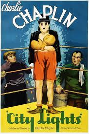

LB
A lightheartedletterboxd comedyabout homelessness,suicide, disability,x15 manic depression 12 , substance abuse, handguns, bipolar disorder>, drunk driving, robbery, rheumatic fever, and incarceration. Ladies and gentlemen.....the 1930s!
A tramp falls in love with a beautiful blind flower girl. His on-and-off friendship with a wealthy man allows him to be the girl’s benefactor and suitor.
pedo